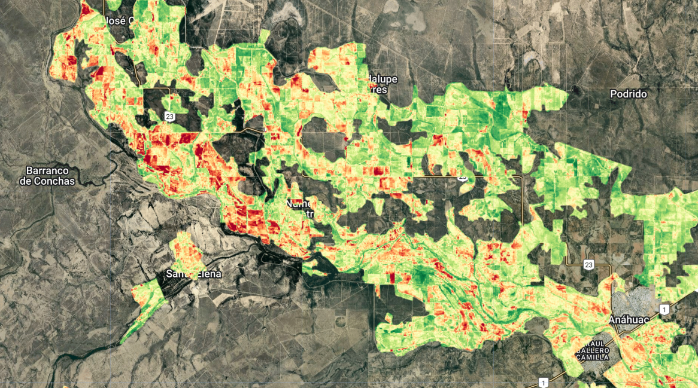

Mediante el análisis de datos satelitales, podemos determinar en que zonas hubo heladas durante un periodo de tiempo.
PRESENCIA DE HELADAS EN NUEVO LEÓN
Actualmente en el estado de Nuevo León 504,633 hectáreas han presentado una o mas heladas en un lapso de 15 días.

ÍNDICES DE VEGETACIÓN
A pesar de eso, el Índice de Reflectancia de Absorción de Clorofila Transformada (TCARI) muestra un comportamiento estable para todo el estado de Nuevo León.